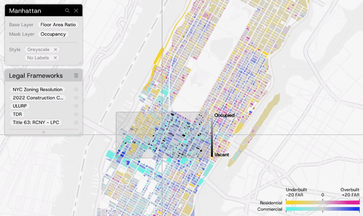
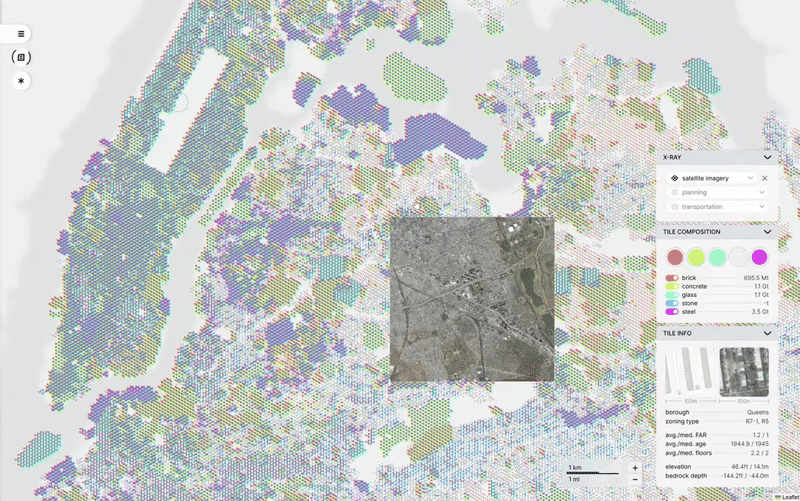

Hao Lee is an architect and urban data analyst based in New York City.
This article is part of NYC Building Materials, an academic project developed in the Computational Design Practices program at Columbia University's Graduate School of Architecture, Planning and Preservation (GSAPP).
June 21, 2025
How do we begin to see the materials that make our cities?
Each building tells a story of material: what was used, where it came from, and what it displaced. Yet the scale of these materials is rarely visible to the public eye.
When I was doing field research for my architectural undergrad thesis project in Taiwan, 2019, I focused on abandoned theater complexes in Taichung's old entertainment hub — The Central District. Most of them was built in the 50s and 60s and were demolished or abandoned in the 2000s, either during the Taiwan SARS pandemic or because of the popularity of modern malls.
I ended up talking my way in an abandoned building by playing my student card with the security guard to get 30 minuts inside. I wandered the whole building, floor by floor, from the basement to the rooftop.
It felt like I was slipping through layers of forgotten slices of life. The furniture was looted or trashed, fixtures torn out, and what remained were surfaces: tiles, textures, the bare bones of the hustle that once was. These were building materials that couldn't be salvaged.
The emptied-out (now demolished) theater complex.
Now that the building has been demolished, taken apart and hauled away (in 2020, just one year after I graduated,) I feel an urge to tell a story. One about the identity of a city and how it’s shaped by its parts — its buildings. People come and go, interiors shift, and memories change, but the materials that linger hold a kind of silent presence. That deserves to be celebrated, and I knew, someday I'd have the opportunity to do so.
Six years later, I’m in New York City — a metropolis shaped as much by construction as by demolition. And here, the question of how we celebrate building materials feels as expansive as the skyline itself.
Thanks to the work of many talented individuals and civic teams, the city now boasts a growing number of public-facing tools: from city-led efforts like the NYC Construction Dashboard to independent projects like Sidewalk Widths NYC by Meli Harvey . That momentum got me thinking: perhaps I could build a visualization of my own while I’m here.
Over the past two semesters of graduate study, I’ve been doing just that — leveraging open data and machine learning to estimate and visualize the building materials that make up New York City:
NYC Building Materials is a platform designed to change that. It offers a new way to explore the city through a material lens: a living, interactive map that visualizes the footprints of what we build and what we erase. By layering data, design, and curiosity, this project invites users to reintroduce themselves to the built environment.
As of 2025, NYC Building Materials has collected and estimated the building materials of over 100,000 buildings in New York City.
There are five different colors in the map, each representing a different material category: timber, glass, concrete, masonry, and steel. Each color dot represents a type of building material in a 100m x 100m (328ft x 328ft) hexagon area. When we overlay these five colors onto each other, patterns emerge and we can identify the why and how of the materials choices in New York City by comparing this visualization with other city maps. Overall, it shows a hidden world of the city's built environment that is not immediately apparent from other maps.
Here's one pattern that got my attention immediately after rendering out the map:
Straddling the border of Queens and Brooklyn are neighborhoods like Maspeth, Blissville, and East Williamsburg; areas often overlooked in the city’s media and mapping narratives, their urban fabric less defined and more dispersed.
But viewed through the lens of building materials, they emerge as something striking: a vast orange crater, set against a sea of blue, green, and purple.
Filter out buildings taller than two stories, and the pattern sharpens. The crater reveals itself as a dense concentration of low-rise masonry and concrete structures.
Exclude postwar buildings instead, and another insight comes into focus. Compared to much of New York City, this “crater” is not just an outlier in form, but in age: its buildings are, in fact, actually newer than those in many surrounding neighborhoods.
While refining the data, I, as an relative NYC outsider, decided to take the liberty to classify and identify the different patterns of the map. Colors, the most visually distinct of the three pattern categories, mainly represent the overall cityscape of neighborhoods/regions. Should we see lots of green, it's probably a business district that contains a lot of glass. Comparatively, if we see purple-ish colors, it's a neighborhood with less gentrification (a well-mix of building material types/colors.)
Some material patterns emerged from the data visualization.
Similarly, cuts and clusters represent the city's more distinct development histories, such as transportation line and cultural enclaves.
Now for the technical part: how did I actually gather the material data?
NYC Building Material's data structure.
Building Information Modeling, or BIM, is now a standard tool in architecture, allowing designers, builders, and clients to manage materials with precision. New York City also offers a rich trove of open-source resources through NYC Open Data, providing access to thousands of datasets across agencies and neighborhoods. But despite these tools, one thing was missing: data on building materials at the scale of the city itself.
So I decided to make my own data.
The visualization's data takes MapPLUTO (each building's basic properties) as a basis and introduces RASMI
Then, the data was processed into building material intensities (MI) for each hexagonal grid.
Finally, external maps and data overlays are brought into the platform for context and comparison.

Layout.

Demo X-ray in an earlier version of NYC Building Materials.
asdfgdagf
Story markers, in the form of sourcing quotes from NYT articles.
Can NYC Building Materials be applied to other cities?
In theory, yes.
In practice, it takes more work. Each city has its own logic: shaped by data availability, planning history, and the ways people have built over time.
First, there’s the data. To begin mapping a city’s material footprint, we need access to a comprehensive building dataset: basic details about each structure, from size to construction type. That’s the foundation.
Then comes the knowledge: the local context, architectural patterns, and historical shifts that give meaning to the data. In New York City, for example, more than 90% of buildings are three stories or fewer—a fact that shaped how I defined the building categories and subcategories. But in a city like Taipei, where five-story walkups dominate (often with added rooftop structures), a different system of classification is needed.
But with today’s widespread use of GIS in government and city planning, this kind of data is more accessible than ever. That opens the door for scaling the project: adapting NYC Building Materials to other cities, each with its own patterns, materials, and histories. With the right data and local insight, this framework could travel borders.
Methodology
NYC Building Materials uses a combination of open data from NYC Open Data, in this case, MapPLUTO for buliding properties like height, number of stories, and building type; and RASMI, short for Regional Assessment of buildings’ Material Intensities, by Tomer Fisherman et al., for the material composition of buildings. These compositions include the building's structure, facade, and interior materials, but do not take furnitures and foundations/piles into account.
I then used Python's scikit-learn library to cluster (in this case, k-prototype for a mixture of data types) the buildings into six major categories and several subcategories based on their properties, and then applied the RASMI data to each cluster to estimate the material composition of each building.